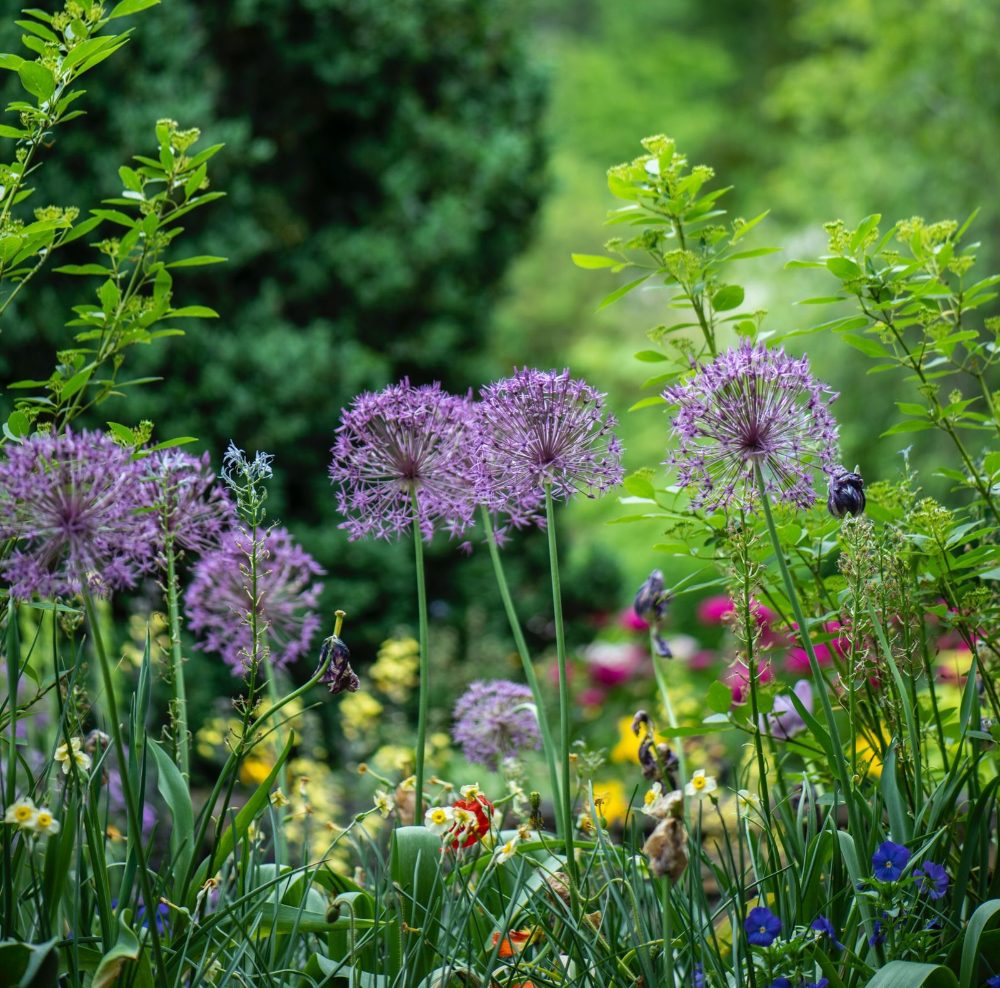
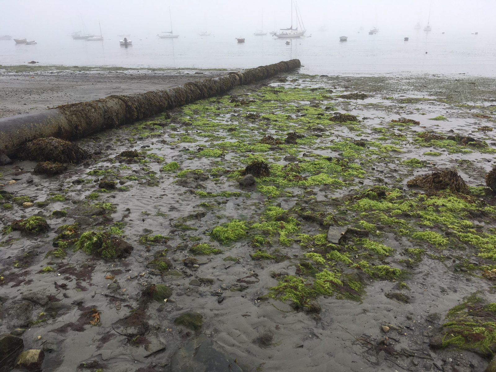
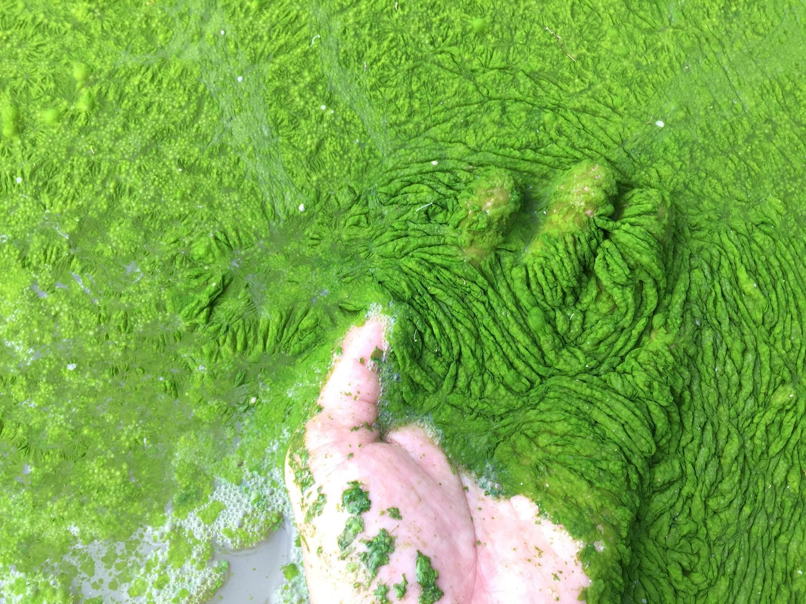

Protect South Portland has felt it important that the city pass the companion to our pesticide ordinance: a ban on synthetic fertilizers. We rallied our supporters to attend a city council workshop on April 9 and invited several experts to testify how synthetic fertilizers are harmful to the long term health of our soil and how runoff causes dead zones in our bay. We are happy to report that our council was very receptive to banning these fertilizers and will be working to write an ordinance.
Synthetic fertilizers are a quick fix for plants but do not feed the soil on which plants depend. The microbes and healthy life in the soil cannot interact with the chemicals and thus the soil becomes of poorer and poorer quality and less able to nourish the plants. This leads to a cycle of adding more chemical fertilizer even though the plants can only absorb 10% of these synthetic fertilizers. The soil becomes compacted by frequent applications of fertilizers and since these fertilizers are water soluble most of an application runs off into city drains or goes directly into our bay. With the current damaging weather events and torrential rainfalls this compaction exacerbates the amount of run off.
In the bay the excessive nitrogen from the runoff causes algal blooms which lead to a depletion of oxygen. Shellfish beds can be smothered and fish can die or leave the area permanently. We depend on bait fish for our lobster industry and lobsters themselves can be threatened.
Organic fertilizing such as spreading compost adds humus to the soil and helps aerate the soil and encourages healthy organisms to enrich our soil to produce healthy grass and plants.


After many meetings, the fertilizer ordinance was passed in November of 2020. All along this ordinance belonged with the previously passed pesticide ordinance as both pesticide and synthetic fertilizer are harmful to people, the soil, the ocean, and the environment at large. The healthy alternative is organic land care which nurtures soil life and protects the health of people and their pets. Fortunately, many communities in Maine are starting to see the value of organic land care.
For anyone wanting more information go to: beyondpesticides.org. They are in the forefront of this issue and greatly value the stand we have taken in South Portland.
Grow Healthy South Portland — the City has collected specific information for healthy land care:
